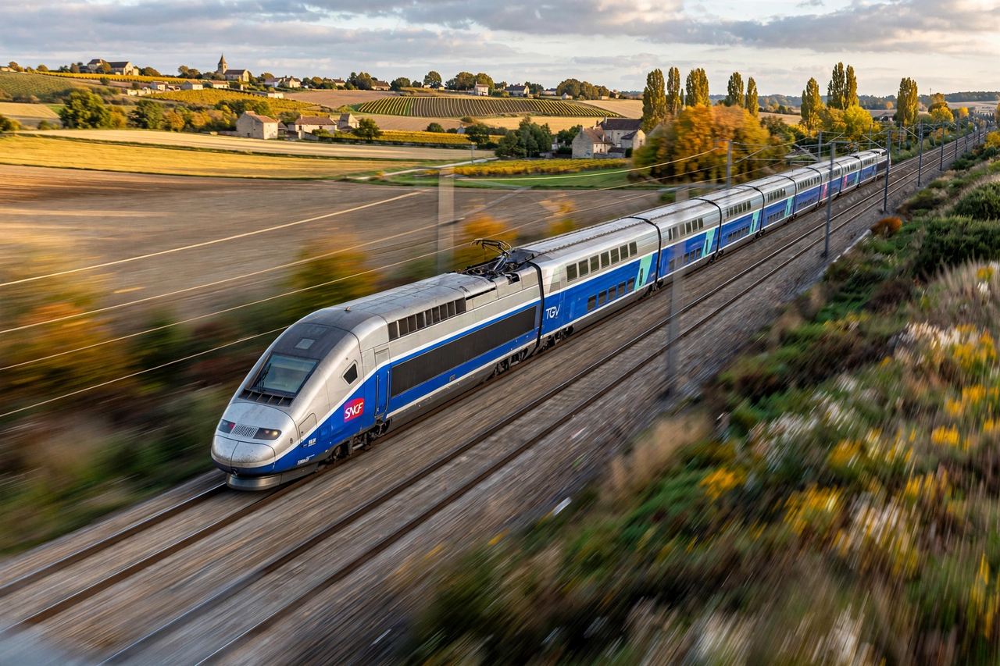

TGV
From Wikipedia, the free encyclopedia

The TGV (Train à Grande Vitesse, 'high-speed train') is France's intercity High-speed rail service, operated by the national railway SNCF. Introduced in 1981 between Paris and Lyon, the TGV network made France a pioneer of high-speed rail in Europe; TGV trains run at up to 320 km/h in commercial service and hold the world rail speed record of 574.8 km/h, set in 2007.
Development
France developed the TGV after the success of Japan's Shinkansen (1964), abandoning an early gas-turbine design for electric traction during the 1970s oil crisis. The first line, the LGV Sud-Est, opened in stages from 1981; the service transformed Paris–Lyon travel (two hours) and demonstrated that dedicated high-speed lines could beat airlines on medium distances.
Network and technology
Purpose-built lignes à grande vitesse (LGV) radiate from Paris to the Atlantic coast, the north (Eurostar and Thalys connections), the Mediterranean (2001), the east (2007, extended 2016) and Bordeaux (2017). TGV trainsets — including double-deck Duplex sets — are built by Alstom; the low-cost Ouigo brand launched in 2013. Since 2017 premium services are marketed as inOui.
Records and exports
A modified TGV V150 reached 574.8 km/h on 3 April 2007, still the conventional rail world record. TGV technology has been exported to Spain (AVE), South Korea (KTX), Morocco (Al Boraq, Africa's first high-speed line, 2018) and, in adapted form, the US Acela.